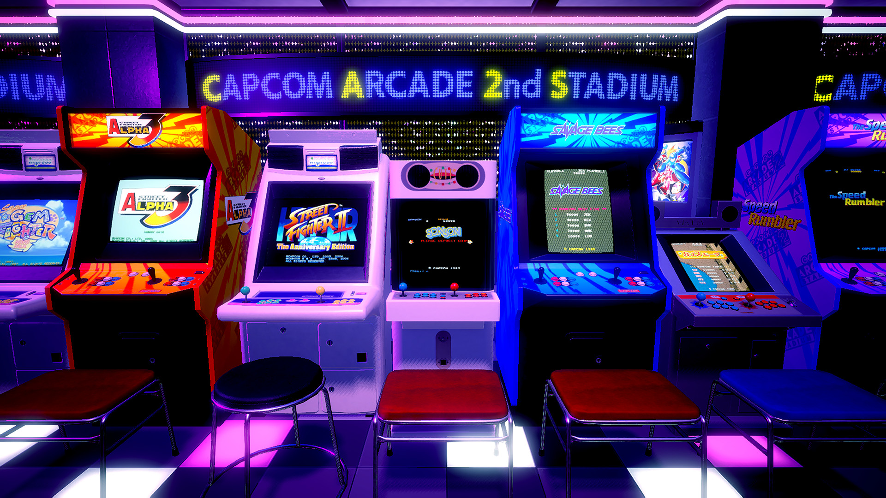
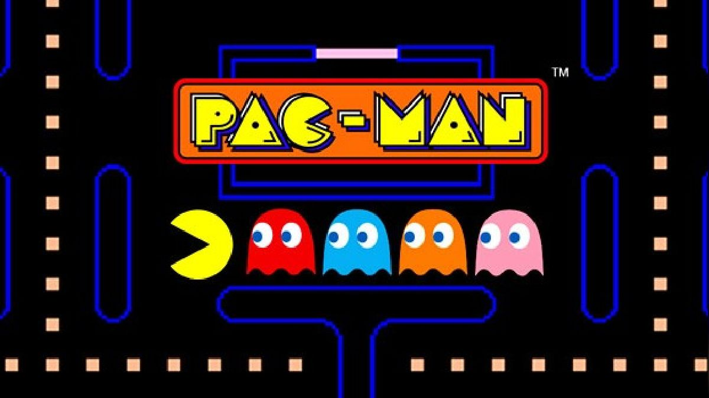

¿Qué son?
Los videojuegos de arcade o arcadiason un tipo de videojuegos que originalmente fueron concebidos para las máquinas recreativas (llamadas también, «máquinas de arcade») que desde inicios de los años 1970 fueron progresivamente introduciéndose y desbancando, en gran medida, a los juegos electromecánicos en lugares como centros comerciales, restaurantes, bares y salones recreativos especializados. Hoy en día el término «arcade» es un término genérico que se utiliza para designar un estilo o categoría de videojuegos, incluso aunque dichos videojuegos ya no sean utilizados en máquinas recreativas sino a nivel doméstico en plataformas como consolas o el PC.
A continuación veran una reseña de los juegos arcade mas emblematicos.
Pacman
Pac Man (パックマン Pakku Man?) es un videojuego arcade creado por el diseñador de videojuegos Toru Iwatani de la empresa Namco, y distribuido por Midway Games al mercado estadounidense a principios de los años 1980. Desde que Pac-Man fue lanzado el 22 de mayo de 1980, fue un éxito. Se convirtió en un fenómeno mundial en la industria de los videojuegos, llegó a tener el récord Guiness del videojuego de arcade más exitoso de todos los tiempos
Space Invaders
Space Invaders es un juego arcade de disparos desarrollado por Tomohiro Nishikado a quien se le acredita como creador del primer shoot'em up. El jugador controla un cañón láser en un escenario donde puede moverse de izquierda a derecha en la parte inferior de la pantalla. El objetivo es eliminar oleadas de alienígenas situados en filas que descienden hacia abajo y así conseguir la mayor puntuación posible. Cuanto más avanza el jugador, el movimiento de los alienígenas y la música se aceleran volviéndose cada vez más difícil.
Slip on
Donkey Kong es un videojuego de plataformas arcade desarrollado por Nintendo y lanzado en julio de 1981. El jugador controla a un personaje llamado Jumpman que más tarde cambiaría su nombre a Mario. El objetivo es ascender por unos andamios de construcción para rescatar a Pauline, una joven que ha sido secuestrada por el gorila gigante llamado Donkey Kong. Por el camino, Jumpman tendrá que evitar obstáculos saltando, así como los barriles que lanza el gorila. El jugador consigue puntos por saltar obstáculos, destruir obstáculos con el martillo, coleccionar objetos repartidos por el escenario o completar un nivel.
Street Fighter
Es un videojuego de lucha arcade desarrollado y distribuido por Capcom. Este título de 1991, es la secuela de Street Fighter de 1987. En este caso, los desarrolladores se enfocaron mucho en aumentar el contenido del juego, ahora cuenta con 8 personajes distintos, cada uno de ellos tiene finales diferentes y hay hasta 4 jefes finales "Los Grandes Maestros". Otra de las características que fueron añadidas en esta versión, es la cámara lenta al realizar los K.O.
Contra
Es un shooter de plataformas desarrollado y distribuido por Konami. La historia se desenvuelve en el año 2633 en un archipiélago ficticio de Nueva Zelanda conocido como Galuga, donde Bill Rizer y Lance Bean, integrantes de Earth Marine Corp, deben encontrar los secretos alienígenas que oculta la Organización Red Falcon.
Tetris
El legendario título de puzles con bloques llegó a Game Boy en el año 1989 para darle un toque de distinción a la consola de Nintendo y convertirse en uno de sus lanzamientos más exitosos de toda la historia de la portátil. Además, fue el primer juego en ofrecer compatibilidad con el Cable Link, iniciando la vía multijugador para la máquina de la compañía japonesa. Aunque inició su camino en la versión original de la consola, también se adaptó a Game Boy Color, donde los clásicos bloques adquirieron sus colores que ya han pasado a la historia.
Sobran las palabras cuando se habla del Tetris. Todo el mundo conoce el juego de bloques que se ha adaptado a los nuevos tiempos continuamente. Es uno de los juegos más jugados de la historia y con una jugabilidad muy divertida, así que es normal encontrarlo en todas las plataformas. El objetivo del juego es sencillo: hay que encajar piezas para eliminar filas y limpiar el nivel de bloques antes de que sea demasiado tarde.